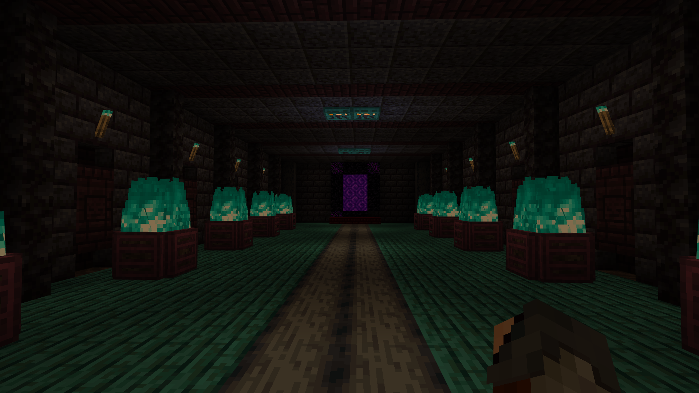

Pagina
Gerald A. Baldivieso Rojas


Sede Principal
Cochabamba es una ciudad del centro de Bolivia. En un cerro en el este, un teleférico asciende a la enorme estatua del Cristo de la Concordia con vista al área circundante. En el centro de la ciudad está la Plaza 14 de Septiembre, una plaza colonial rodeada de galerías y la catedral barroca andina de San Sebastián. En los alrededores, hay muchas iglesias coloniales, como la de Santo Domingo con su impresionante fachada de piedra tallada
Santa Cruz de la Sierra es el centro comercial de Bolivia y la ciudad capital del departamento de Santa Cruz. Se ubica sobre el río Piraí, en las zonas bajas tropicales al este de los Andes. La fundaron los españoles en el siglo XVI y actualmente es un núcleo cosmopolita con museos, restaurantes y discotecas. El casco histórico tiene en su centro la Catedral Metropolitana de ladrillo rosa en la Plaza 24 de septiembre, la plaza central.
Oruro es una ciudad y municipio de Bolivia, capital y ciudad más poblada del departamento de Oruro y de la provincia de Cercado. El municipio tiene una población de 264 683 habitantes, convirtiéndose de esa manera en la quinta ciudad más poblada de Bolivia.
El departamento del Beni es uno de los nueve departamentos en que se divide Bolivia. Su capital y ciudad más poblada es Trinidad.
Himno de Bolivia
El Himno Nacional de Bolivia, composición originalmente llamada la Canción Patriótica, es el himno oficial de la bolivianidad como símbolo patrio que honra a sus glorias históricas como las de su porvenir.